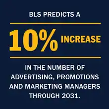

.jpeg)
With the increased prominence of online marketing, affiliate marketing — also known as influencer marketing — has become popular among many organizations in bridging the gap between consumers and organizations. But what is affiliate marketing?
 Affiliate marketing utilizes the ever-growing popularity of industry experts and social media influencers. In working with these third-party influencers, your organization will collaborate to promote your products or services for compensation. In collaboration, influencers will engage their audience with posts, blogs or videos to bring in more business for your organization and create new leads.Within the last few years, affiliate or influencer marketing has grown immensely with new media like TikTok, Instagram, Youtube and blogs being a mainstream form of entertainment and news. Affiliate marketing has become one of the more popular forms of digital marketing. According to Influencer Marketing Hub, the affiliate marketing industry was estimated to be a $12 billion industry in 2022.
The job market is growing for marketers. The U.S. Bureau of Labor and Statistics (BLS) predicts a 10% increase through 2031 in the number of advertising, promotions and marketing managers. In 2021, the median salary for those positions was $133,380, according to BLS.